2026 Advanced Higher Chemistry - Paper 2 questions
Source: Scottish Qualifications Authority (SQA) / Qualifications Scotland. This is a StemInteract HTML companion, not an official HTML edition. Selectable text is supplied alongside original page images. Use the images or original PDF for equations, powers, fractions, vector notation, tables and diagrams; text extraction cannot fully preserve mathematical layout.
Jump to a question
PDF page 1
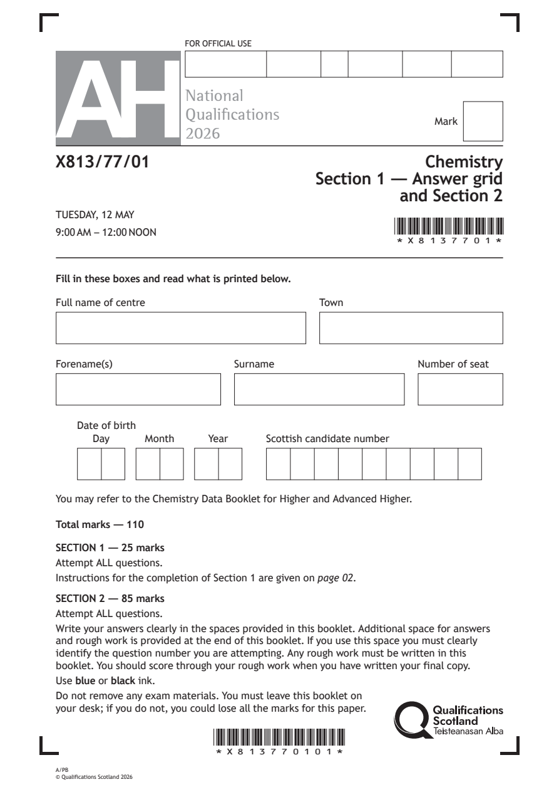
Selectable page text
FOR OFFICIAL USE
AH
National
Qualications
Mark
2026
X813/77/01 Chemistry
Section 1 — Answer grid
and Section 2
TUESDAY, 12 MAY
9:00 AM – 12:00 NOON
*X8137701*
Fill in these boxes and read what is printed below.
Full name of centre Town
Forename(s) Surname Number of seat
Date of birth
Day Month Year Scottish candidate number
You may refer to the Chemistry Data Booklet for Higher and Advanced Higher.
Total marks — 110
SECTION 1 — 25 marks
Attempt ALL questions.
Instructions for the completion of Section 1 are given on page 02.
SECTION 2 — 85 marks
Attempt ALL questions.
Write your answers clearly in the spaces provided in this booklet. Additional space for answers
and rough work is provided at the end of this booklet. If you use this space you must clearly
identify the question number you are attempting. Any rough work must be written in this
booklet. You should score through your rough work when you have written your final copy.
Use blue or black ink.
Do not remove any exam materials. You must leave this booklet on
your desk; if you do not, you could lose all the marks for this paper.
*X813770101*
A/PB
© Qualifications Scotland 2026PDF page 2
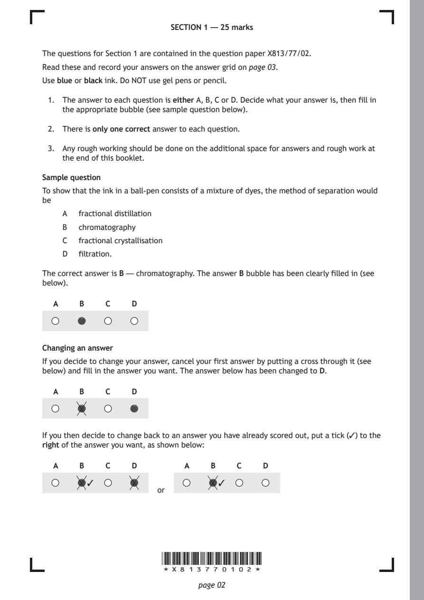
Selectable page text
SECTION 1 — 25 marks
The questions for Section 1 are contained in the question paper X813/77/02.
Read these and record your answers on the answer grid on page 03.
Use blue or black ink. Do NOT use gel pens or pencil.
1. The answer to each question is either A, B, C or D. Decide what your answer is, then fill in
the appropriate bubble (see sample question below).
2. There is only one correct answer to each question.
3. Any rough working should be done on the additional space for answers and rough work at
the end of this booklet.
Sample question
To show that the ink in a ball-pen consists of a mixture of dyes, the method of separation would
be
A fractional distillation
B chromatography
C fractional crystallisation
D filtration.
The correct answer is B — chromatography. The answer B bubble has been clearly filled in (see
below).
A B C D
Changing an answer
If you decide to change your answer, cancel your first answer by putting a cross through it (see
below) and fill in the answer you want. The answer below has been changed to D.
A B C D
If you then decide to change back to an answer you have already scored out, put a tick (✓) to the
right of the answer you want, as shown below:
A B C D A B C D
or
*X813770102*
page 02PDF page 3
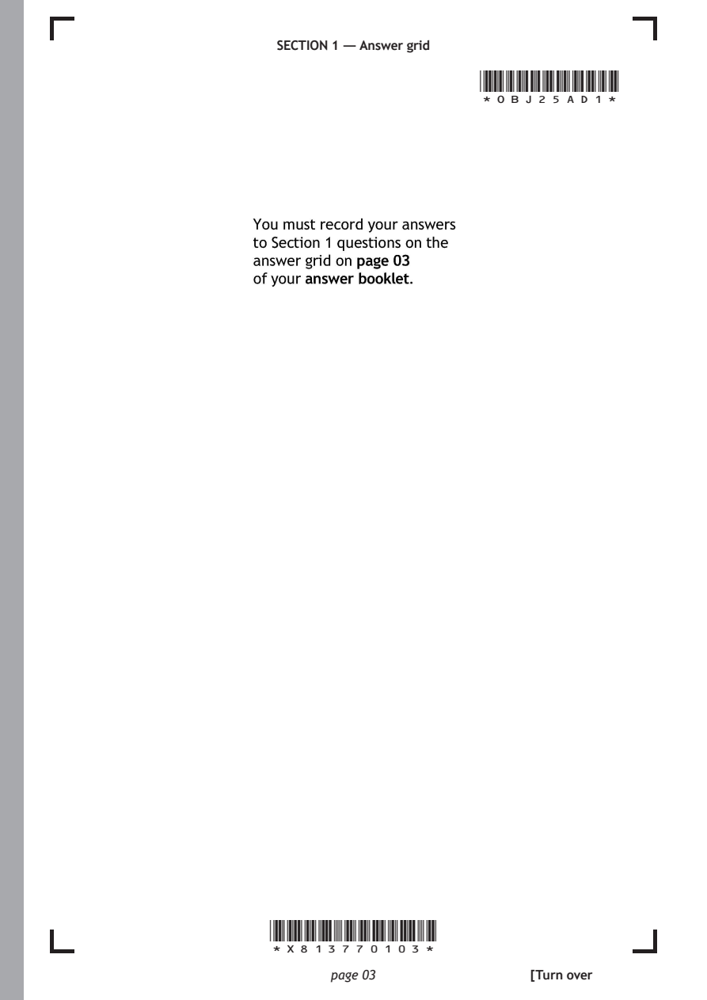
Selectable page text
SECTION 1 — Answer grid
*OBJ25AD1*
A B C D
1
2
3
4
5
6
7
8
9
10
11
12
13
14
15
16
17
18
19
20
21
22
23
24
25
*X813770103*
page 03 [Turn overPDF page 4
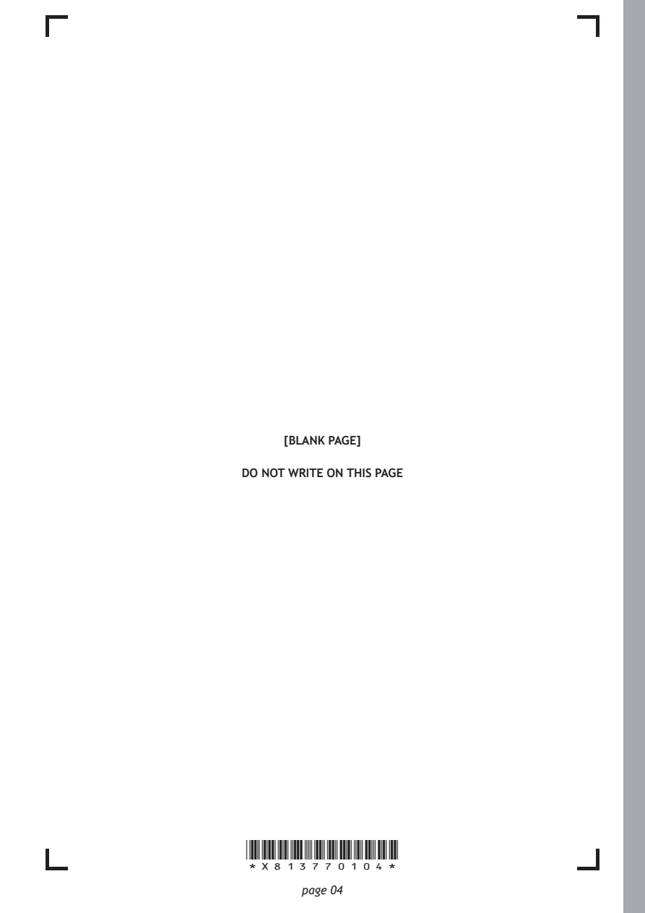
Selectable page text
[BLANK PAGE]
DO NOT WRITE ON THIS PAGE
*X813770104*
page 04PDF page 5
Paper 2, Question 1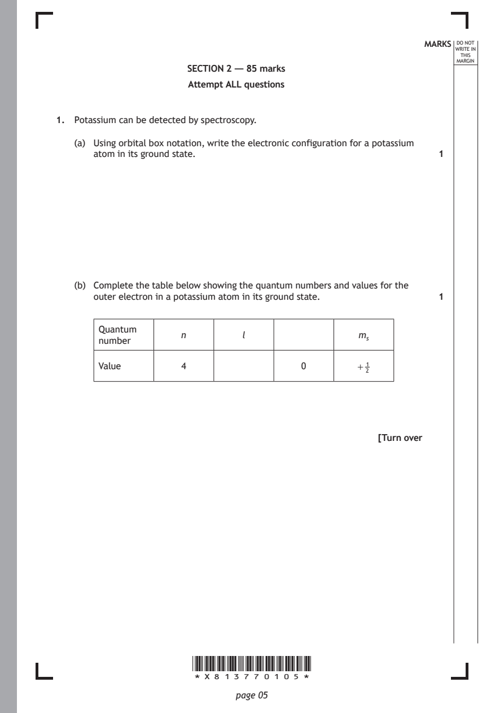
Selectable page text
MARKS _{W}^{D}_{R}^{O}_{I} _{T}^{N}OT
E IN
THIS
MARGIN
SECTION 2 — 85 marks
Attempt ALL questions
1. Potassium can be detected by spectroscopy.
(a) Using orbital box notation, write the electronic configuration for a potassium
atom in its ground state. 1
(b) Complete the table below showing the quantum numbers and values for the
outer electron in a potassium atom in its ground state. 1
Quantum
n l mₛ
number
Value 4 0 + 1
2
[Turn over
*X813770105*
page 05PDF page 6
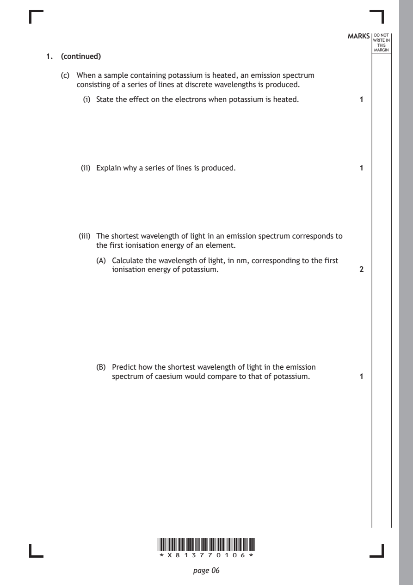
Selectable page text
MARKS _{W}^{D}_{R}^{O}_{I} _{T}^{N}OT
E IN
THIS
MARGIN
1. (continued)
(c) When a sample containing potassium is heated, an emission spectrum
consisting of a series of lines at discrete wavelengths is produced.
(i) State the effect on the electrons when potassium is heated. 1
(ii) Explain why a series of lines is produced. 1
(iii) The shortest wavelength of light in an emission spectrum corresponds to
the first ionisation energy of an element.
(A) Calculate the wavelength of light, in nm, corresponding to the first
ionisation energy of potassium. 2
(B) Predict how the shortest wavelength of light in the emission
spectrum of caesium would compare to that of potassium. 1
*X813770106*
page 06PDF page 7
Paper 2, Question 2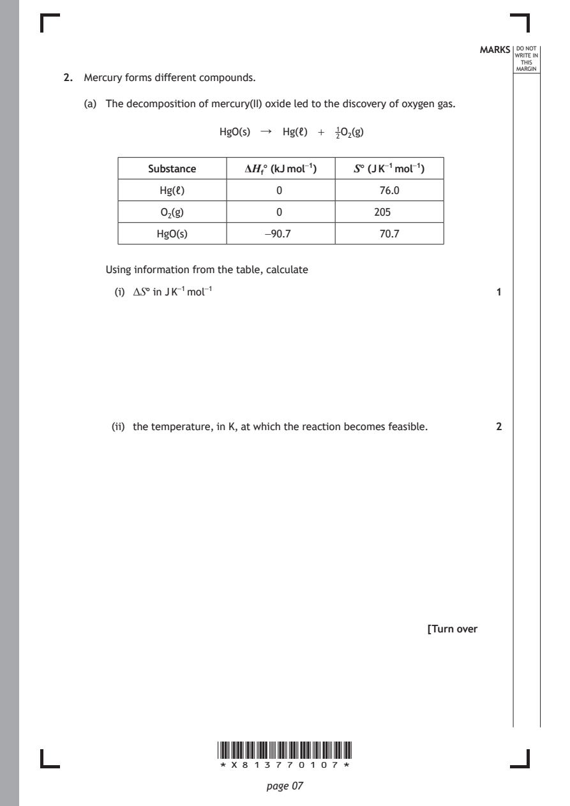
Selectable page text
MARKS _{W}^{D}_{R}^{O}_{I} _{T}^{N}OT
E IN
THIS
MARGIN
2. Mercury forms different compounds.
(a) The decomposition of mercury(II) oxide led to the discovery of oxygen gas.
HgO(s) ↓ Hg(ℓ) + 1O₂(g)
2
Substance ΔH_{f}° (kJ mol⁻¹) S° (J K⁻¹ mol⁻¹)
Hg(ℓ) 0 76.0
O₂(g) 0 205
HgO(s) -90.7 70.7
Using information from the table, calculate
(i) ΔS° in J K⁻¹ mol⁻¹ 1
(ii) the temperature, in K, at which the reaction becomes feasible. 2
[Turn over
*X813770107*
page 07PDF page 8
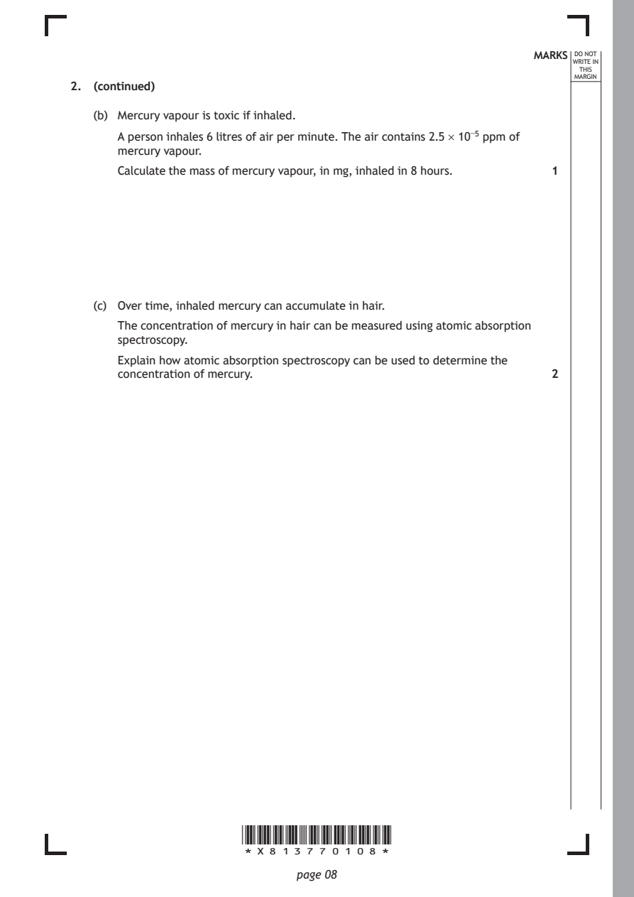
Selectable page text
MARKS _{W}^{D}_{R}^{O}_{I} _{T}^{N}OT
E IN
THIS
MARGIN
2. (continued)
(b) Mercury vapour is toxic if inhaled.
A person inhales 6 litres of air per minute. The air contains 2.5 × 10⁻⁵ ppm of
mercury vapour.
Calculate the mass of mercury vapour, in mg, inhaled in 8 hours. 1
(c) Over time, inhaled mercury can accumulate in hair.
The concentration of mercury in hair can be measured using atomic absorption
spectroscopy.
Explain how atomic absorption spectroscopy can be used to determine the
concentration of mercury. 2
*X813770108*
page 08PDF page 9
Paper 2, Question 3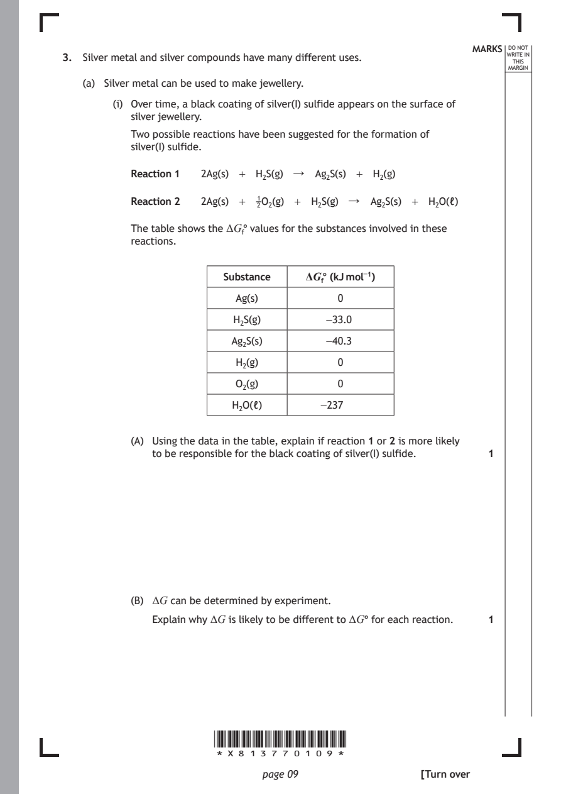
Selectable page text
MARKS _{W}^{D}_{R}^{O}_{I} _{T}^{N}OT
3. Silver metal and silver compounds have many different uses. E IN
THIS
MARGIN
(a) Silver metal can be used to make jewellery.
(i) Over time, a black coating of silver(I) sulfide appears on the surface of
silver jewellery.
Two possible reactions have been suggested for the formation of
silver(I) sulfide.
Reaction 1 2Ag(s) + H₂S(g) ↓ Ag₂S(s) + H₂(g)
Reaction 2 2Ag(s) + 1O₂(g) + H₂S(g) ↓ Ag₂S(s) + H₂O(ℓ)
2
The table shows the ΔG_{f}° values for the substances involved in these
reactions.
Substance ΔG_{f}° (kJ mol⁻¹)
Ag(s) 0
H₂S(g) -33.0
Ag₂S(s) -40.3
H₂(g) 0
O₂(g) 0
H₂O(ℓ) -237
(A) Using the data in the table, explain if reaction 1 or 2 is more likely
to be responsible for the black coating of silver(I) sulfide. 1
(B) ΔG can be determined by experiment.
Explain why ΔG is likely to be different to ΔG° for each reaction. 1
*X813770109*
page 09 [Turn overPDF page 10
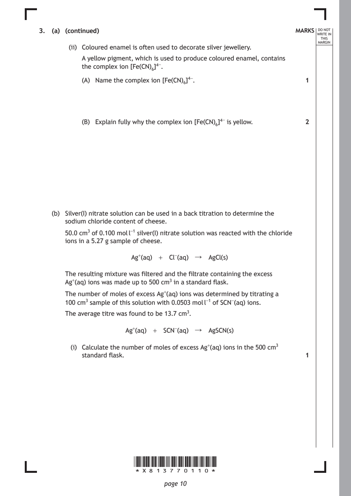
Selectable page text
3. (a) (continued) MARKS _{W}^{D}_{R}^{O}_{I} _{T}^{N}OT
E IN
THIS
MARGIN
(ii) Coloured enamel is often used to decorate silver jewellery.
A yellow pigment, which is used to produce coloured enamel, contains
the complex ion [Fe(CN)₆]⁴⁻.
(A) Name the complex ion [Fe(CN)₆]⁴⁻. 1
(B) Explain fully why the complex ion [Fe(CN)₆]⁴⁻ is yellow. 2
(b) Silver(I) nitrate solution can be used in a back titration to determine the
sodium chloride content of cheese.
50.0 cm³ of 0.100 mol l⁻¹ silver(I) nitrate solution was reacted with the chloride
ions in a 5.27 g sample of cheese.
Ag⁺(aq) + Cl⁻(aq) ↓ AgCl(s)
The resulting mixture was filtered and the filtrate containing the excess
Ag⁺(aq) ions was made up to 500 cm³ in a standard flask.
The number of moles of excess Ag⁺(aq) ions was determined by titrating a
100 cm³ sample of this solution with 0.0503 mol l⁻¹ of SCN⁻(aq) ions.
The average titre was found to be 13.7 cm³.
Ag⁺(aq) + SCN⁻(aq) ↓ AgSCN(s)
(i) Calculate the number of moles of excess Ag⁺(aq) ions in the 500 cm³
standard flask. 1
*X813770110*
page 10PDF page 11
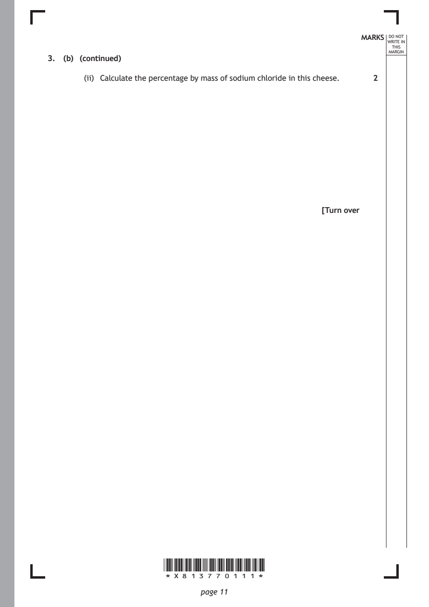
Selectable page text
MARKS _{W}^{D}_{R}^{O}_{I} _{T}^{N}OT
E IN
THIS
MARGIN
3. (b) (continued)
(ii) Calculate the percentage by mass of sodium chloride in this cheese. 2
[Turn over
*X813770111*
page 11PDF page 12
Paper 2, Question 4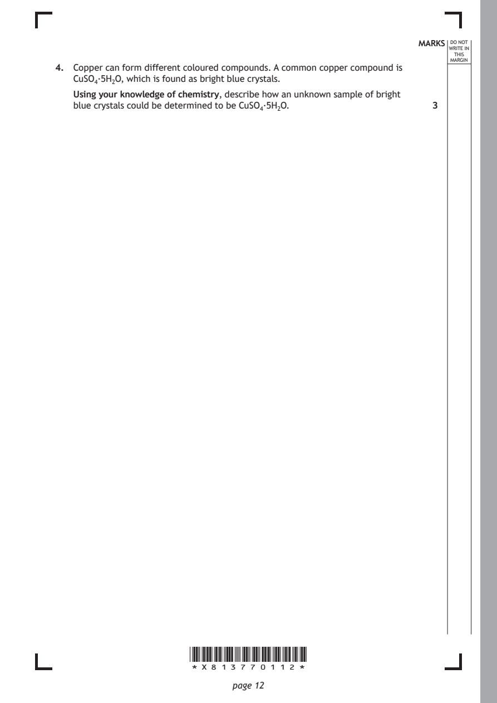
Selectable page text
MARKS _{W}^{D}_{R}^{O}_{I} _{T}^{N}OT
E IN
THIS
MARGIN
4. Copper can form different coloured compounds. A common copper compound is
CuSO₄·5H₂O, which is found as bright blue crystals.
Using your knowledge of chemistry, describe how an unknown sample of bright
blue crystals could be determined to be CuSO₄·5H₂O. 3
*X813770112*
page 12PDF page 13
Paper 2, Question 5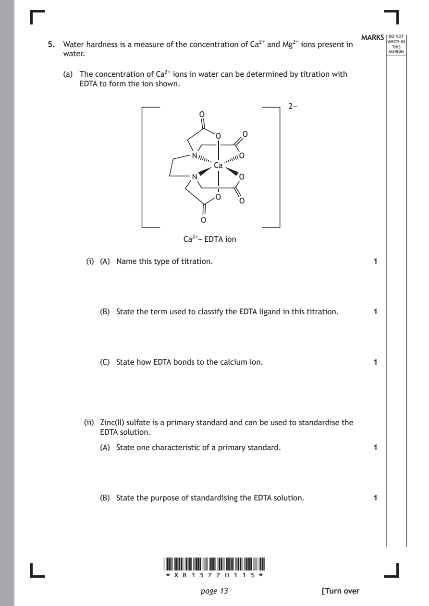
Selectable page text
MARKS _{W}^{D}_{R}^{O}_{I} _{T}^{N}OT
5. Water hardness is a measure of the concentration of Ca²⁺ and Mg²⁺ ions present in E IN
THIS
water. MARGIN
(a) The concentration of Ca²⁺ ions in water can be determined by titration with
EDTA to form the ion shown.
2−
O
O O
N O
Ca
N O
O
O
O
Ca²⁺– EDTA ion
(i) (A) Name this type of titration. 1
(B) State the term used to classify the EDTA ligand in this titration. 1
(C) State how EDTA bonds to the calcium ion. 1
(ii) Zinc(II) sulfate is a primary standard and can be used to standardise the
EDTA solution.
(A) State one characteristic of a primary standard. 1
(B) State the purpose of standardising the EDTA solution. 1
*X813770113*
page 13 [Turn overPDF page 14
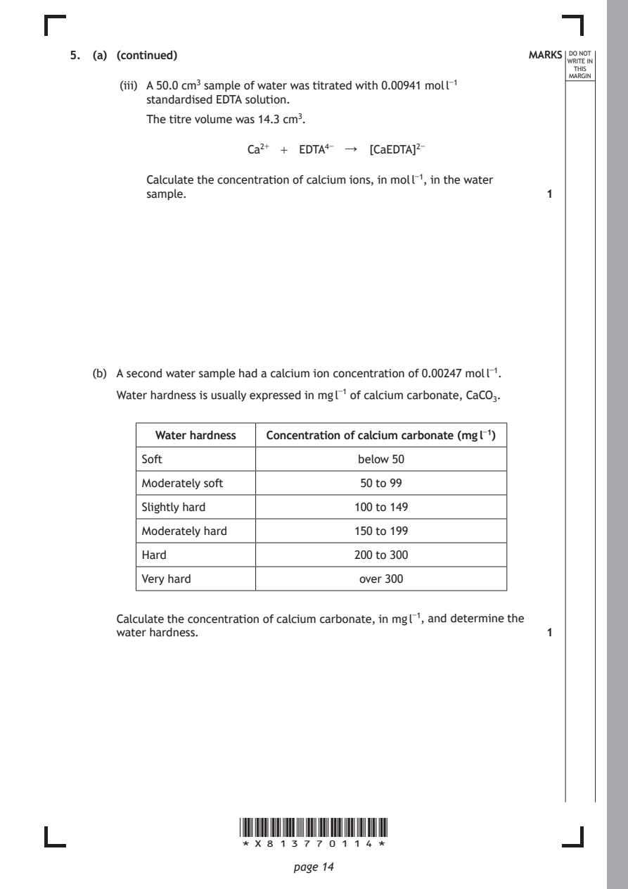
Selectable page text
5. (a) (continued) MARKS _{W}^{D}_{R}^{O}_{I} _{T}^{N}OT
E IN
THIS
MARGIN
(iii) A 50.0 cm³ sample of water was titrated with 0.00941 mol l⁻¹
standardised EDTA solution.
The titre volume was 14.3 cm³.
Ca²⁺ + EDTA⁴⁻ ↓ [CaEDTA]²⁻
Calculate the concentration of calcium ions, in mol l⁻¹, in the water
sample. 1
(b) A second water sample had a calcium ion concentration of 0.00247 mol l⁻¹.
Water hardness is usually expressed in mg l⁻¹ of calcium carbonate, CaCO₃.
Water hardness Concentration of calcium carbonate (mg l⁻¹)
Soft below 50
Moderately soft 50 to 99
Slightly hard 100 to 149
Moderately hard 150 to 199
Hard 200 to 300
Very hard over 300
Calculate the concentration of calcium carbonate, in mg l⁻¹, and determine the
water hardness. 1
*X813770114*
page 14PDF page 15
Paper 2, Question 6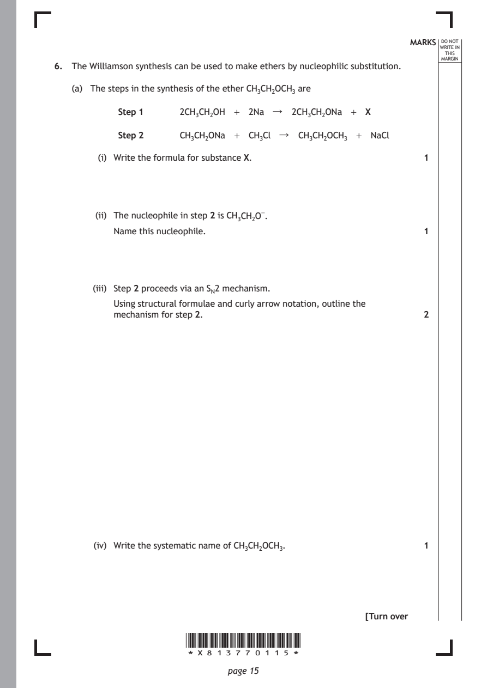
Selectable page text
MARKS _{W}^{D}_{R}^{O}_{I} _{T}^{N}OT
E IN
THIS
MARGIN
6. The Williamson synthesis can be used to make ethers by nucleophilic substitution.
(a) The steps in the synthesis of the ether CH₃CH₂OCH₃ are
Step 1 2CH₃CH₂OH + 2Na ↓ 2CH₃CH₂ONa + X
Step 2 CH₃CH₂ONa + CH₃Cl ↓ CH₃CH₂OCH₃ + NaCl
(i) Write the formula for substance X. 1
(ii) The nucleophile in step 2 is CH₃CH₂O⁻.
Name this nucleophile. 1
(iii) Step 2 proceeds via an S_{N}2 mechanism.
Using structural formulae and curly arrow notation, outline the
mechanism for step 2. 2
(iv) Write the systematic name of CH₃CH₂OCH₃. 1
[Turn over
*X813770115*
page 15PDF page 16
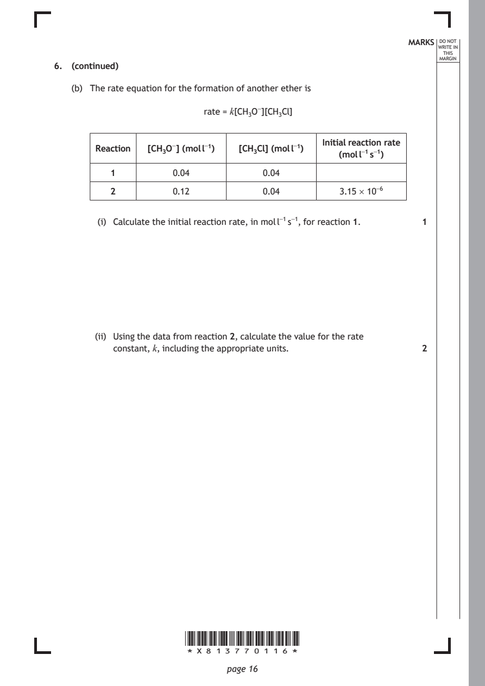
Selectable page text
MARKS _{W}^{D}_{R}^{O}_{I} _{T}^{N}OT
E IN
THIS
MARGIN
6. (continued)
(b) The rate equation for the formation of another ether is
rate = k[CH₃O⁻][CH₃Cl]
Initial reaction rate
Reaction [CH₃O⁻] (mol l⁻¹) [CH₃Cl] (mol l⁻¹)
(mol l⁻¹ s⁻¹)
1 0.04 0.04
2 0.12 0.04 3.15 × 10⁻⁶
(i) Calculate the initial reaction rate, in mol l⁻¹ s⁻¹, for reaction 1. 1
(ii) Using the data from reaction 2, calculate the value for the rate
constant, k, including the appropriate units. 2
*X813770116*
page 16PDF page 17
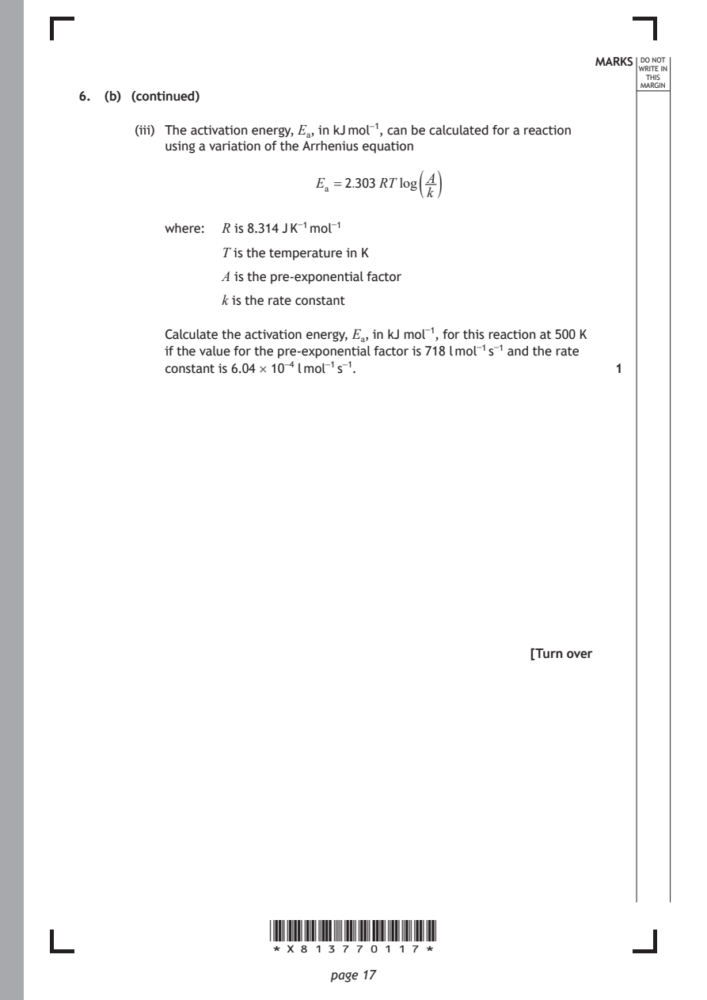
Selectable page text
MARKS _{W}^{D}_{R}^{O}_{I} _{T}^{N}OT
E IN
THIS
MARGIN
6. (b) (continued)
(iii) The activation energy, Eₐ, in kJ mol⁻¹, can be calculated for a reaction
using a variation of the Arrhenius equation
( )
A
Eₐ =2.303RTlog
k
where: R is 8.314 J K⁻¹ mol⁻¹
T is the temperature in K
A is the pre-exponential factor
k is the rate constant
Calculate the activation energy, Eₐ, in kJ mol⁻¹, for this reaction at 500 K
if the value for the pre-exponential factor is 718 l mol⁻¹ s⁻¹ and the rate
constant is 6.04 × 10⁻⁴ l mol⁻¹ s⁻¹. 1
[Turn over
*X813770117*
page 17PDF page 18
Paper 2, Question 7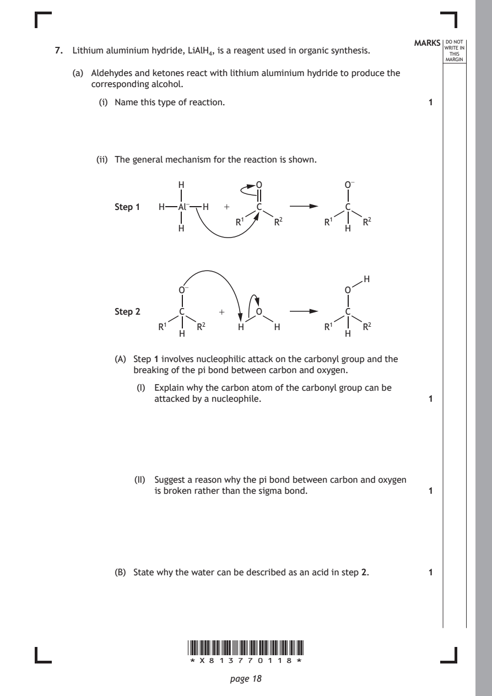
Selectable page text
MARKS _{W}^{D}_{R}^{O}_{I} _{T}^{N}OT
7. Lithium aluminium hydride, LiAlH₄, is a reagent used in organic synthesis. E IN
THIS
MARGIN
(a) Aldehydes and ketones react with lithium aluminium hydride to produce the
corresponding alcohol.
(i) Name this type of reaction. 1
(ii) The general mechanism for the reaction is shown.
H O O⁻
Step 1 H Al⁻ H + C C
R¹ R² R¹ R²
H H
H
O⁻ O
Step 2 C + O C
R¹ R² H H R¹ R²
H H
(A) Step 1 involves nucleophilic attack on the carbonyl group and the
breaking of the pi bond between carbon and oxygen.
(I) Explain why the carbon atom of the carbonyl group can be
attacked by a nucleophile. 1
(II) Suggest a reason why the pi bond between carbon and oxygen
is broken rather than the sigma bond. 1
(B) State why the water can be described as an acid in step 2. 1
*X813770118*
page 18PDF page 19
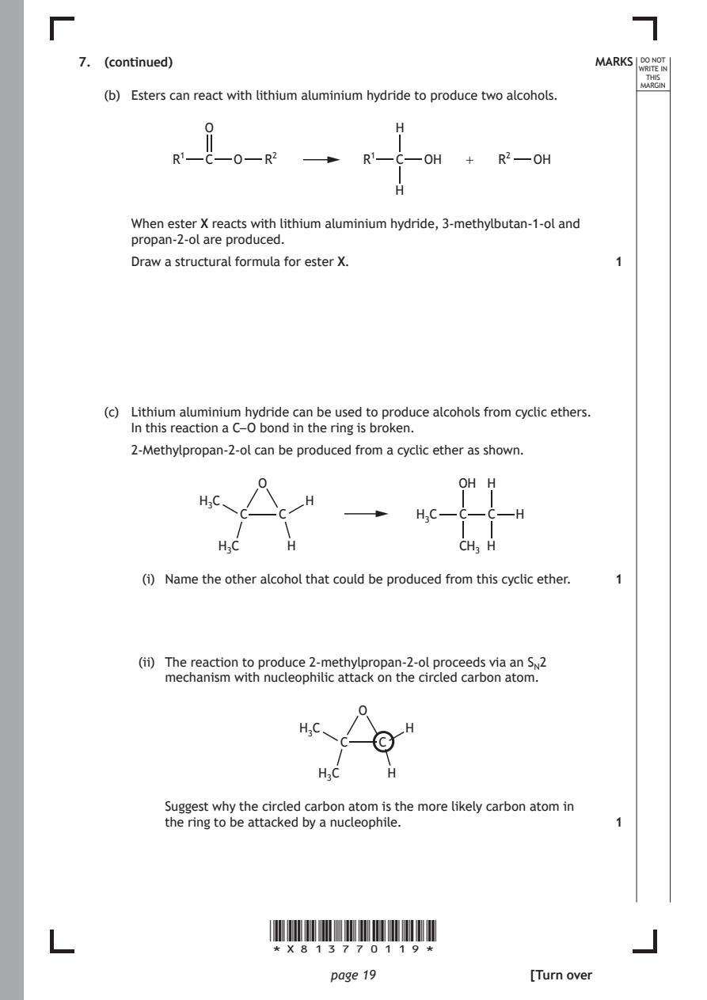
Selectable page text
7. (continued) MARKS _{W}^{D}_{R}^{O}_{I} _{T}^{N}OT
E IN
THIS
MARGIN
(b) Esters can react with lithium aluminium hydride to produce two alcohols.
O H
R¹ C O R² R¹ C OH + R² OH
H
When ester X reacts with lithium aluminium hydride, 3-methylbutan-1-ol and
propan-2-ol are produced.
Draw a structural formula for ester X. 1
(c) Lithium aluminium hydride can be used to produce alcohols from cyclic ethers.
In this reaction a C– O bond in the ring is broken.
2-Methylpropan-2-ol can be produced from a cyclic ether as shown.
O OH H
H₃C H
C C H₃C C C H
H₃C H CH₃ H
(i) Name the other alcohol that could be produced from this cyclic ether. 1
(ii) The reaction to produce 2-methylpropan-2-ol proceeds via an S_{N}2
mechanism with nucleophilic attack on the circled carbon atom.
O
H₃C H
C C
H₃C H
Suggest why the circled carbon atom is the more likely carbon atom in
the ring to be attacked by a nucleophile. 1
*X813770119*
page 19 [Turn overPDF page 20
Paper 2, Question 8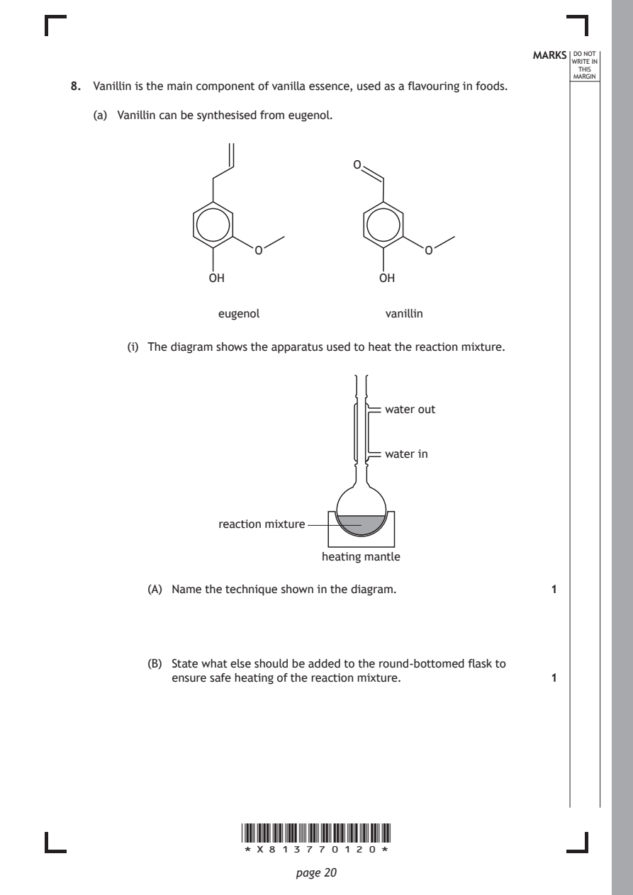
Selectable page text
MARKS _{W}^{D}_{R}^{O}_{I} _{T}^{N}OT
E IN
THIS
MARGIN
8. Vanillin is the main component of vanilla essence, used as a flavouring in foods.
(a) Vanillin can be synthesised from eugenol.
O
O O
OH OH
eugenol vanillin
(i) The diagram shows the apparatus used to heat the reaction mixture.
water out
water in
reaction mixture
heating mantle
(A) Name the technique shown in the diagram. 1
(B) State what else should be added to the round-bottomed flask to
ensure safe heating of the reaction mixture. 1
*X813770120*
page 20PDF page 21
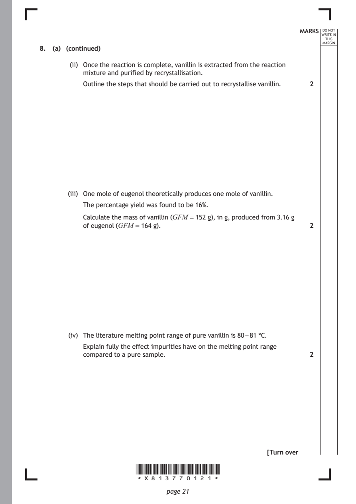
Selectable page text
MARKS _{W}^{D}_{R}^{O}_{I} _{T}^{N}OT
E IN
THIS
MARGIN
8. (a) (continued)
(ii) Once the reaction is complete, vanillin is extracted from the reaction
mixture and purified by recrystallisation.
Outline the steps that should be carried out to recrystallise vanillin. 2
(iii) One mole of eugenol theoretically produces one mole of vanillin.
The percentage yield was found to be 16%.
Calculate the mass of vanillin (GFM = 152 g), in g, produced from 3.16 g
of eugenol (GFM = 164 g). 2
(iv) The literature melting point range of pure vanillin is 80 – 81 °C.
Explain fully the effect impurities have on the melting point range
compared to a pure sample. 2
[Turn over
*X813770121*
page 21PDF page 22
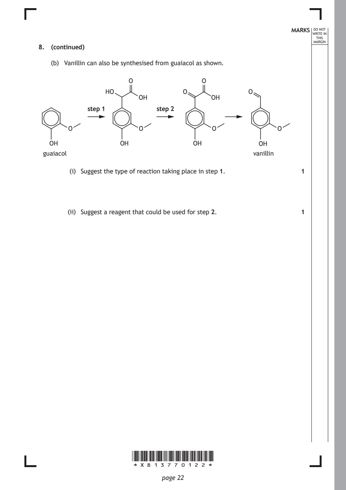
Selectable page text
MARKS _{W}^{D}_{R}^{O}_{I} _{T}^{N}OT
E IN
THIS
MARGIN
8. (continued)
(b) Vanillin can also be synthesised from guaiacol as shown.
O O
HO O O
OH OH
step 1 step 2
O O O O
OH OH OH OH
guaiacol vanillin
(i) Suggest the type of reaction taking place in step 1. 1
(ii) Suggest a reagent that could be used for step 2. 1
*X813770122*
page 22PDF page 23
Paper 2, Question 9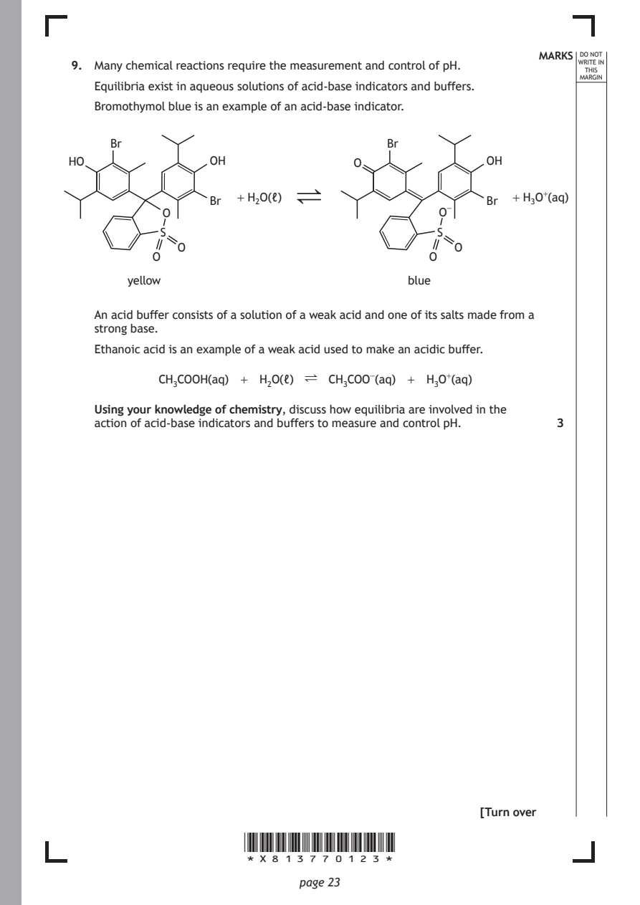
Selectable page text
MARKS _{W}^{D}_{R}^{O}_{I} _{T}^{N}OT
9. Many chemical reactions require the measurement and control of pH. E IN
THIS
MARGIN
Equilibria exist in aqueous solutions of acid-base indicators and buffers.
Bromothymol blue is an example of an acid-base indicator.
Br Br
HO OH O OH
+ H₂O(ℓ) Ý + H₃O⁺(aq)
Br Br
O O⁻
S S
O O
O O
yellow blue
An acid buffer consists of a solution of a weak acid and one of its salts made from a
strong base.
Ethanoic acid is an example of a weak acid used to make an acidic buffer.
CH₃COOH(aq) + H₂O(ℓ) ∏ CH₃COO⁻(aq) + H₃O⁺(aq)
Using your knowledge of chemistry, discuss how equilibria are involved in the
action of acid-base indicators and buffers to measure and control pH. 3
[Turn over
*X813770123*
page 23PDF page 24
Paper 2, Question 10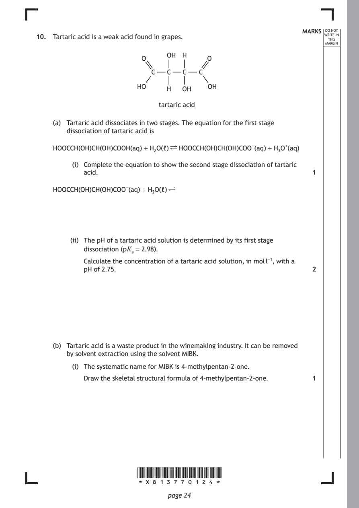
Selectable page text
MARKS _{W}^{D}_{R}^{O}_{I} _{T}^{N}OT
10. Tartaric acid is a weak acid found in grapes. E IN
THIS
MARGIN
OH H
O O
C C C C
HO OH
H OH
tartaric acid
(a) Tartaric acid dissociates in two stages. The equation for the first stage
dissociation of tartaric acid is
HOOCCH(OH)CH(OH)COOH(aq) + H₂O(ℓ) ∏ HOOCCH(OH)CH(OH)COO⁻(aq) + H₃O⁺(aq)
(i) Complete the equation to show the second stage dissociation of tartaric
acid. 1
HOOCCH(OH)CH(OH)COO⁻(aq) + H₂O(ℓ) ∏
(ii) The pH of a tartaric acid solution is determined by its first stage
dissociation (pKₐ = 2.98).
Calculate the concentration of a tartaric acid solution, in mol l⁻¹, with a
pH of 2.75. 2
(b) Tartaric acid is a waste product in the winemaking industry. It can be removed
by solvent extraction using the solvent MIBK.
(i) The systematic name for MIBK is 4-methylpentan-2-one.
Draw the skeletal structural formula of 4-methylpentan-2-one. 1
*X813770124*
page 24PDF page 25
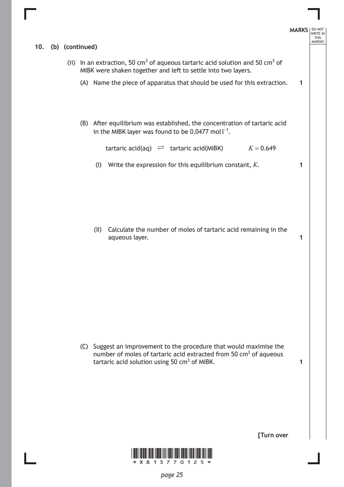
Selectable page text
MARKS _{W}^{D}_{R}^{O}_{I} _{T}^{N}OT
E IN
THIS
MARGIN
10. (b) (continued)
(ii) In an extraction, 50 cm³ of aqueous tartaric acid solution and 50 cm³ of
MIBK were shaken together and left to settle into two layers.
(A) Name the piece of apparatus that should be used for this extraction. 1
(B) After equilibrium was established, the concentration of tartaric acid
in the MIBK layer was found to be 0.0477 mol l⁻¹.
tartaric acid(aq) ∏ tartaric acid(MIBK) K = 0.649
(I) W rite the expression for this equilibrium constant, K. 1
(II) C alculate the number of moles of tartaric acid remaining in the
aqueous layer. 1
(C) Suggest an improvement to the procedure that would maximise the
number of moles of tartaric acid extracted from 50 cm³ of aqueous
tartaric acid solution using 50 cm³ of MIBK. 1
[Turn over
*X813770125*
page 25PDF page 26
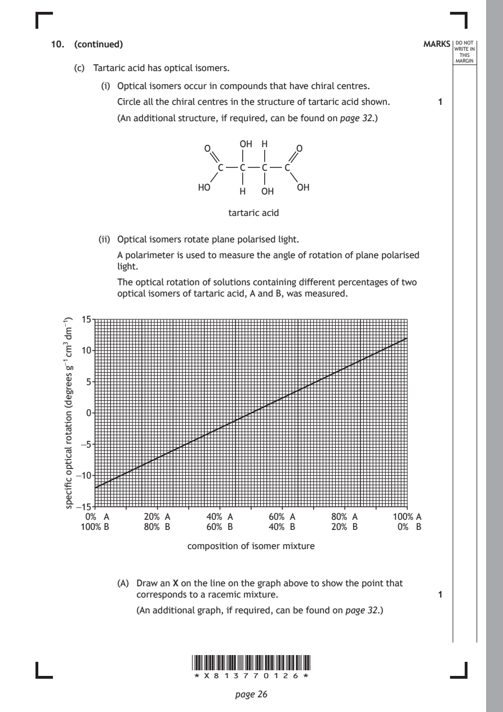
Selectable page text
10. (continued) MARKS _{W}^{D}_{R}^{O}_{I} _{T}^{N}OT
E IN
THIS
MARGIN
(c) Tartaric acid has optical isomers.
(i) Optical isomers occur in compounds that have chiral centres.
Circle all the chiral centres in the structure of tartaric acid shown.
(An additional structure, if required, can be found on page 32.)
OH H
O O
C C C C
HO OH
H OH
tartaric acid
(ii) Optical isomers rotate plane polarised light.
A polarimeter is used to measure the angle of rotation of plane polarised
light.
The optical rotation of solutions containing different percentages of two
optical isomers of tartaric acid, A and B, was measured.
15
10
5
0
−5
−10
−15
0% A 20% A 40%
100% B 80% B 60%
composition of isomer mixture
*X813770126*
page 26
)1−md
3mc
1−g
seerged(
noitator
lacitpo
cificeps
1
A 60% A 80% A 100% A
B 40% B 20% B 0% B
(A) Draw an X on the line on the graph above to show the point that
corresponds to a racemic mixture. 1
(An additional graph, if required, can be found on page 32.)PDF page 27
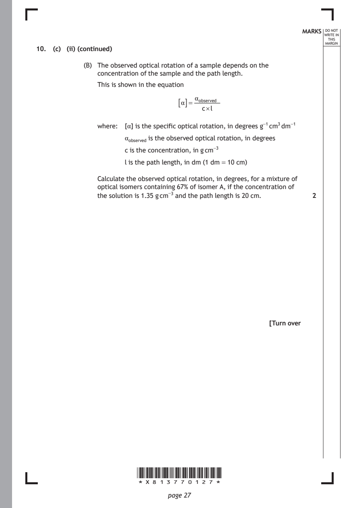
Selectable page text
MARKS _{W}^{D}_{R}^{O}_{I} _{T}^{N}OT
E IN
THIS
MARGIN
10. (c) (ii) (continued)
(B) The observed optical rotation of a sample depends on the
concentration of the sample and the path length.
This is shown in the equation
αₒ_{b}ₛₑᵣᵥ
[ α ]= ed
c×l
where: [α] is the specific optical rotation, in degrees g⁻¹ cm³ dm⁻¹
αₒ_{b}ₛₑᵣᵥ is the observed optical rotation, in degrees
ed
c is the concentration, in g cm⁻³
l is the path length, in dm (1 dm = 10 cm)
Calculate the observed optical rotation, in degrees, for a mixture of
optical isomers containing 67% of isomer A, if the concentration of
the solution is 1.35 g cm⁻³ and the path length is 20 cm. 2
[Turn over
*X813770127*
page 27PDF page 28
Paper 2, Question 11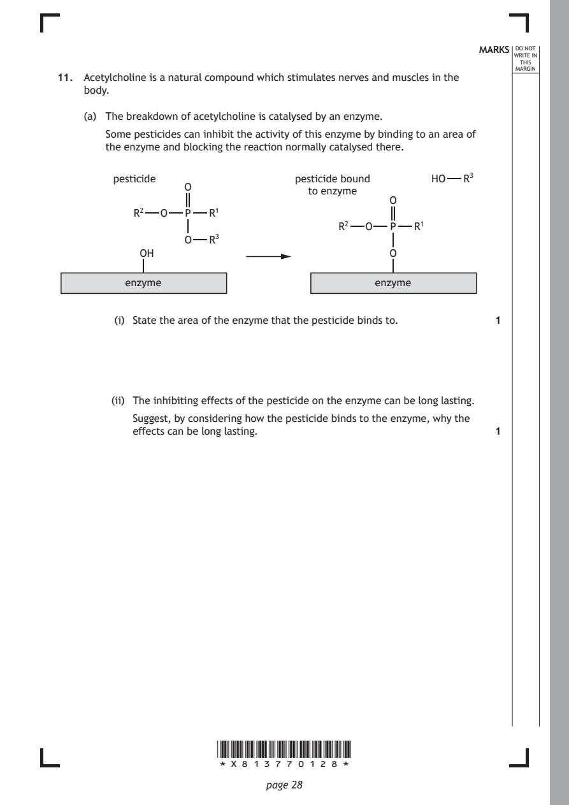
Selectable page text
MARKS _{W}^{D}_{R}^{O}_{I} _{T}^{N}OT
E IN
THIS
MARGIN
11. Acetylcholine is a natural compound which stimulates nerves and muscles in the
body.
(a) The breakdown of acetylcholine is catalysed by an enzyme.
Some pesticides can inhibit the activity of this enzyme by binding to an area of
the enzyme and blocking the reaction normally catalysed there.
pesticide pesticide bound HO R³
O
to enzyme
O
R² O P R¹
R² O P R¹
O R³
OH O
enzyme enzyme
(i) State the area of the enzyme that the pesticide binds to. 1
(ii) The inhibiting effects of the pesticide on the enzyme can be long lasting.
Suggest, by considering how the pesticide binds to the enzyme, why the
effects can be long lasting. 1
*X813770128*
page 28PDF page 29
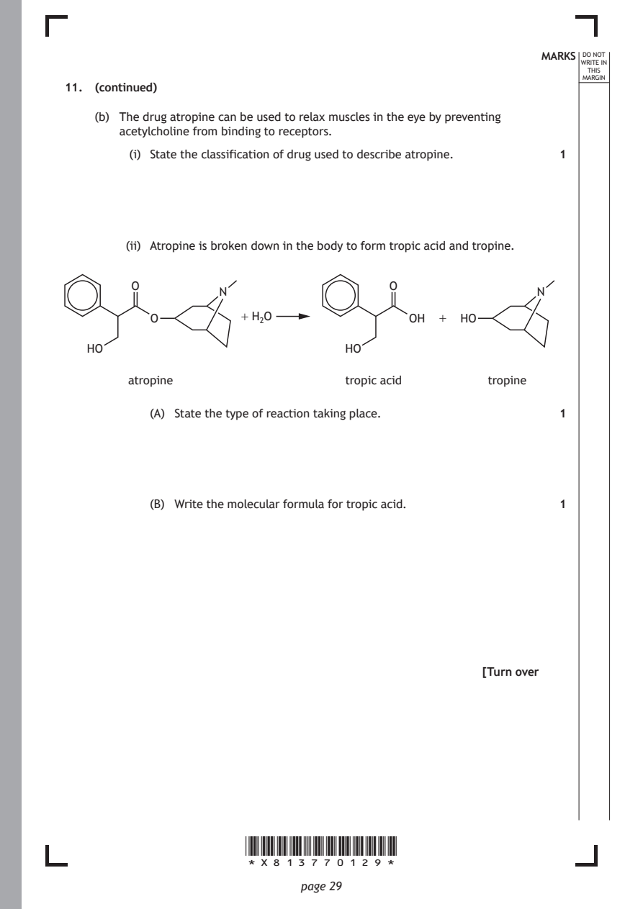
Selectable page text
MARKS _{W}^{D}_{R}^{O}_{I} _{T}^{N}OT
E IN
THIS
MARGIN
11. (continued)
(b) The drug atropine can be used to relax muscles in the eye by preventing
acetylcholine from binding to receptors.
(i) State the classification of drug used to describe atropine. 1
(ii) Atropine is broken down in the body to form tropic acid and tropine.
O O
N N
O + H₂O OH + HO
HO HO
atropine tropic acid tropine
(A) State the type of reaction taking place. 1
(B) Write the molecular formula for tropic acid. 1
[Turn over
*X813770129*
page 29PDF page 30
Paper 2, Question 12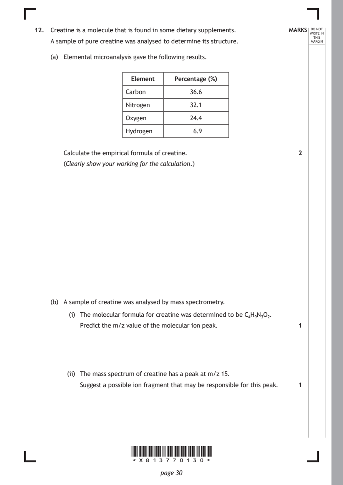
Selectable page text
12. Creatine is a molecule that is found in some dietary supplements. MARKS _{W}^{D}_{R}^{O}_{I} _{T}^{N}OT
E IN
THIS
A sample of pure creatine was analysed to determine its structure. MARGIN
(a) Elemental microanalysis gave the following results.
Element Percentage (%)
Carbon 36.6
Nitrogen 32.1
Oxygen 24.4
Hydrogen 6.9
Calculate the empirical formula of creatine. 2
(Clearly show your working for the calculation.)
(b) A sample of creatine was analysed by mass spectrometry.
(i) The molecular formula for creatine was determined to be C₄H₉N₃O₂.
Predict the m/z value of the molecular ion peak. 1
(ii) The mass spectrum of creatine has a peak at m/z 15.
Suggest a possible ion fragment that may be responsible for this peak. 1
*X813770130*
page 30PDF page 31
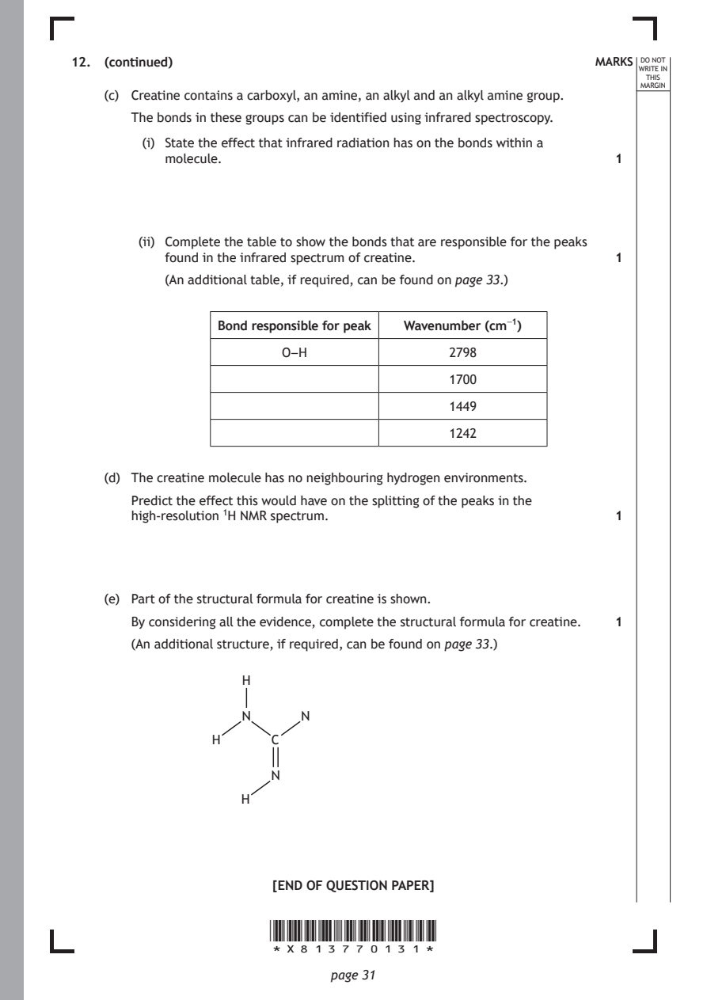
Selectable page text
12. (continued) MARKS _{W}^{D}_{R}^{O}_{I} _{T}^{N}OT
E IN
THIS
MARGIN
(c) Creatine contains a carboxyl, an amine, an alkyl and an alkyl amine group.
The bonds in these groups can be identified using infrared spectroscopy.
(i) State the effect that infrared radiation has on the bonds within a
molecule. 1
(ii) Complete the table to show the bonds that are responsible for the peaks
found in the infrared spectrum of creatine. 1
(An additional table, if required, can be found on page 33.)
Bond responsible for peak Wavenumber (cm⁻¹)
O – H 2798
1700
1449
1242
(d) The creatine molecule has no neighbouring hydrogen environments.
Predict the effect this would have on the splitting of the peaks in the
high-resolution ¹H NMR spectrum. 1
(e) Part of the structural formula for creatine is shown.
By considering all the evidence, complete the structural formula for creatine. 1
(An additional structure, if required, can be found on page 33.)
H
N N
H C
N
H
[END OF QUESTION PAPER]
*X813770131*
page 31PDF page 32
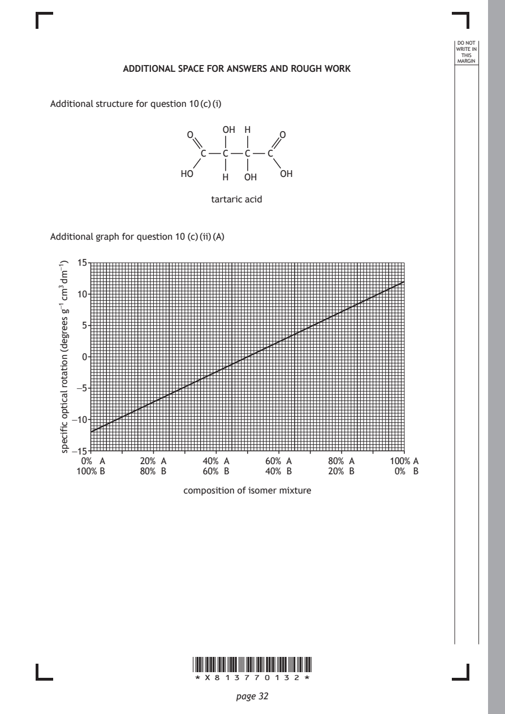
Selectable page text
DO NOT
WRITE IN
THIS
MARGIN
ADDITIONAL SPACE FOR ANSWERS AND ROUGH WORK
Additional structure for question 10 (c) (i)
OH H
O O
C C C C
HO OH
H OH
tartaric acid
Additional graph for question 10 (c) (ii) (A)
15
10
5
0
−5
−10
−15
0% A 20% A 40%
100% B 80% B 60%
composition of isomer mixture
*X813770132*
page 32
)1−md
3mc
1−g
seerged(
noitator
lacitpo
cificeps
A 60% A 80% A 100% A
B 40% B 20% B 0% BPDF page 33
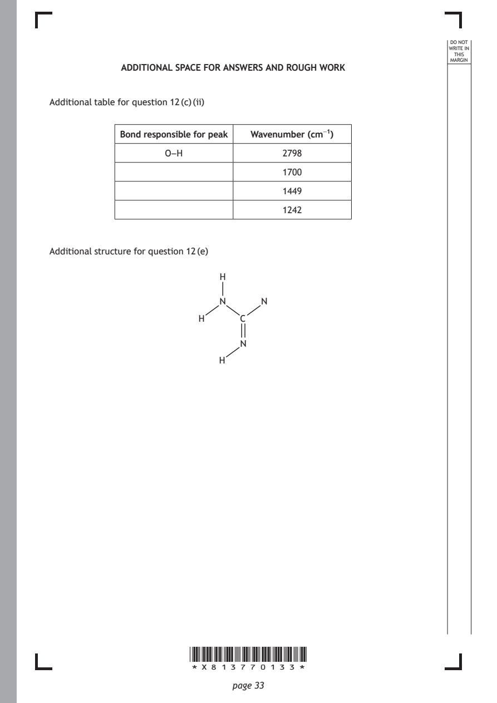
Selectable page text
DO NOT
WRITE IN
THIS
MARGIN
ADDITIONAL SPACE FOR ANSWERS AND ROUGH WORK
Additional table for question 12 (c) (ii)
Bond responsible for peak Wavenumber (cm⁻¹)
O – H 2798
1700
1449
1242
Additional structure for question 12 (e)
H
N N
H C
N
H
*X813770133*
page 33PDF page 34
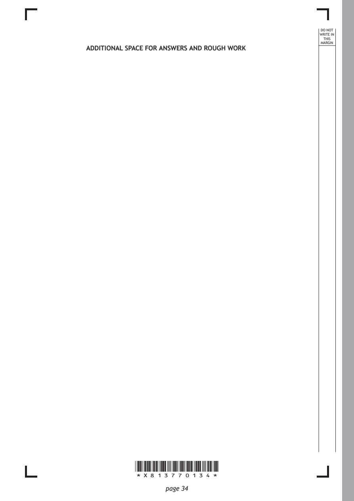
Selectable page text
DO NOT
WRITE IN
THIS
MARGIN
ADDITIONAL SPACE FOR ANSWERS AND ROUGH WORK
*X813770134*
page 34PDF page 35
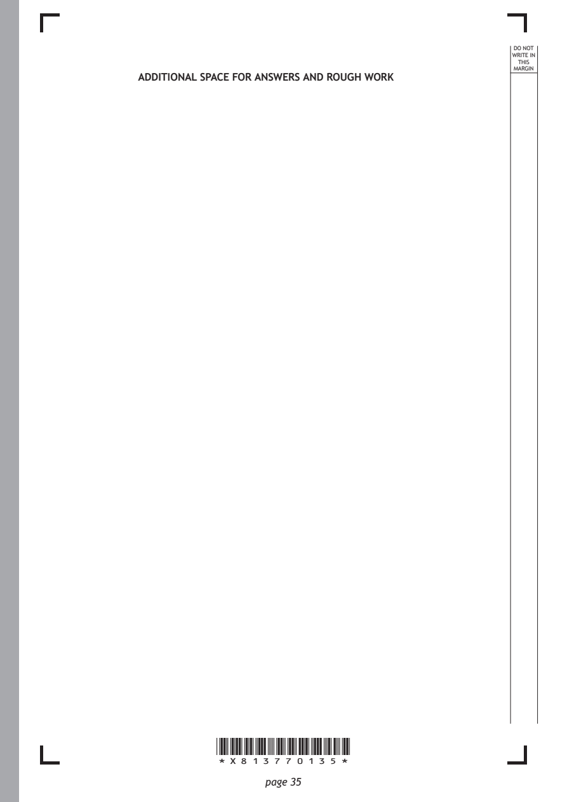
Selectable page text
DO NOT
WRITE IN
THIS
MARGIN
ADDITIONAL SPACE FOR ANSWERS AND ROUGH WORK
*X813770135*
page 35PDF page 36
Selectable page text
[BLANK PAGE]
DO NOT WRITE ON THIS PAGE
*X813770136*
page 36